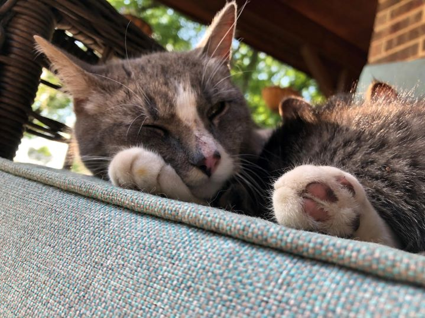
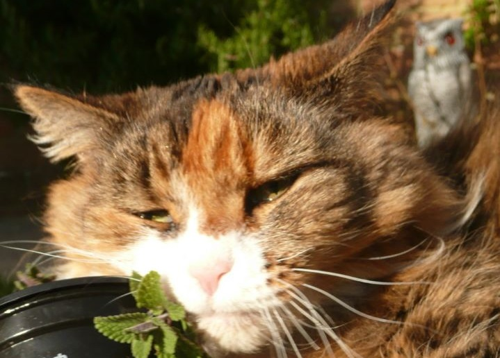

Welcome to StonerCat, where high-meow humor meets cannabis culture! Join us for trippy tales and laughs in this unique space.
| Members | Position | Contact info |
|---|---|---|
| Felix | President | 055-555 55 55 |
| Hanna | Vice President | 055-555 55 55 |
| Alexander | Secretary | 055-555 55 55 |
| Aldin | Editor | 055-555 55 55 |
| William | Sponsor | 055-555 55 55 |
Step into the enchanting world of StonerCats, where each feline companion brings a unique flavor to the tapestry of this whimsical realm. Meet the Chill Himalayan, draped in tranquil shades, exuding an aura of serene calmness that beckons you to unwind and bask in the tranquility of the present moment. A steadfast companion for peaceful reflection and gentle relaxation. Encounter the Curious Maine Coon, adorned in a majestic coat of fur, whose insatiable curiosity leads you on thrilling adventures through unexplored realms. With an adventurous spirit, this intrepid explorer invites you to venture beyond the ordinary and embrace the unknown with boundless enthusiasm. Discover the Mystic Sphynx, shrouded in an enigmatic aura, weaving tales of ancient wisdom and cosmic wonders that transport you to realms beyond imagination. Their cryptic whispers evoke a sense of wonder and awe, inspiring deep contemplation of life's mysteries. Then, there's the Playful Ragdoll, a mischievous sprite with a penchant for mischief and merriment. With a twinkle in their eye and a spring in their step, they infuse laughter and joy into every corner of the StonerCat realm, turning even the dullest moments into uproarious adventures. And finally, behold the Wise Scottish Fold, dignified and contemplative, pondering the profound questions of existence with a philosophical air. Their sage insights into the nature of catnip and the universe itself leave a lingering impression, prompting introspection and deep thought. In this vibrant menagerie of StonerCats, each with their own quirks and charms, there's a companion for every mood and moment, ready to accompany you on a journey of discovery and delight. Embrace the diverse personalities of StonerCats, where laughter, relaxation, and cosmic curiosity converge in a purr-plexing journey that transcends the ordinary and welcomes you into a world of endless possibilities.
Cannabis plants, comprising various strains like Cannabis sativa, indica, and hybrids, contain a complex array of compounds, most notably THC (tetrahydrocannabinol) and CBD (cannabidiol). THC is responsible for the psychoactive effects, inducing a sense of euphoria, relaxation, and altered perception. CBD, on the other hand, is non-psychoactive and is associated with therapeutic properties, offering potential relief from anxiety, pain, and inflammation. The effects of cannabis vary widely depending on the strain, consumption method, and individual tolerance. Sativa strains are often energizing and mood-enhancing, while indicas tend to induce relaxation and sedation. Hybrid strains combine elements of both. Medical research explores cannabis for its potential in managing various conditions, from chronic pain to epilepsy. However, its recreational use raises legal and social considerations. Understanding the diverse effects of cannabis aids in making informed choices, whether for therapeutic or recreational purposes.
Catnip, the enchanting herb in the mint family, has a captivating effect on our feline friends. When cats encounter catnip, it stimulates their sensory receptors, particularly those in the nasal tissue. The active compound, nepetalactone, binds to these receptors, triggering a range of behaviors that can include rolling, rubbing, and playful antics. This botanical interaction induces a temporary state of euphoria, making catnip a source of joy for our furry companions. The effects are relatively short-lived, typically lasting around 10-15 minutes, followed by a refractory period during which cats become temporarily immune to its allure. Not all cats are affected, as sensitivity to catnip is hereditary, but for those who are, it adds a whimsical and entertaining dimension to their feline experience.